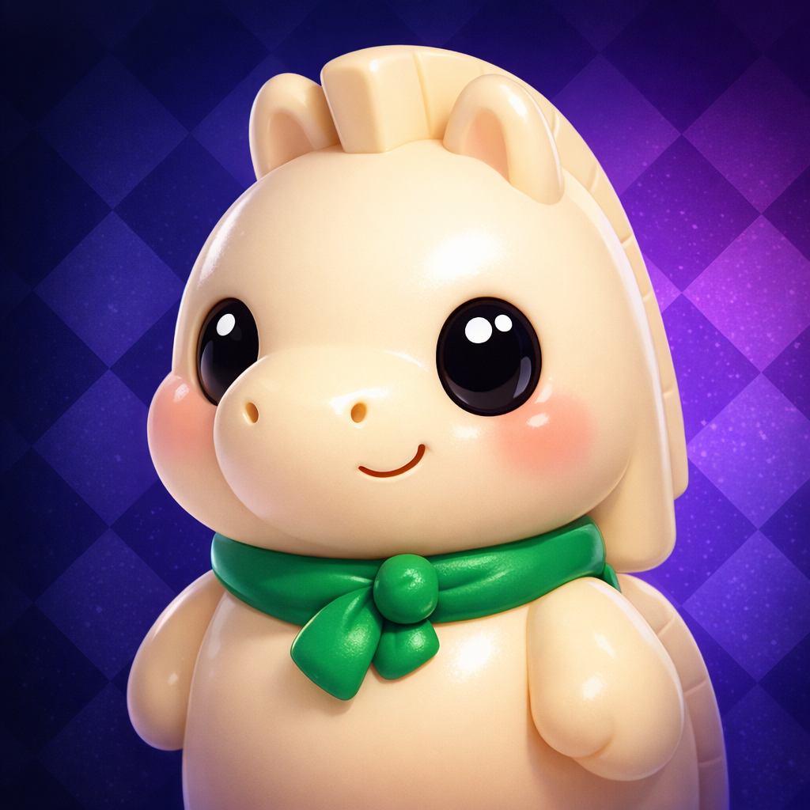

PoketChess Support
PoketChess · get better at chess, five minutes a day
PoketChess is an offline chess trainer: a step-by-step path of lessons, real puzzles that get harder as you improve, quick daily games and eight Stockfish bots.
Frequently asked questions
Do I need an account or internet? No. Everything works offline and nothing leaves your device.
How do I start over? Profile → Settings → Reset progress.
The daily reminder doesn't show up. Check that notifications for PoketChess are allowed in the iOS Settings app, and that the reminder is on in PoketChess → Settings.
Can I change the board look or turn off sounds? Yes, in Profile → Settings.
Contact
Write to hey@beloyal.app and we'll get back to you.